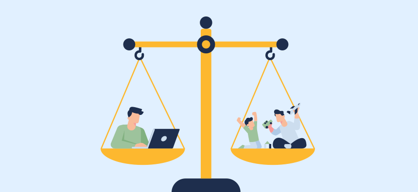

About Me

Welcome to Neverdown! My name is [Your Name], and this website is a window into my world. Here, you'll find insights into my life, interests, and experiences. Join me on this journey of self-discovery!
My Interests
Whether it's exploring the outdoors, delving into the latest technology, or immersing myself in a good book, Neverdown is a space where I share my passions and connect with like-minded individuals.

Blog
Follow my blog for regular updates on my adventures, thoughts, and discoveries. From travel stories to reflections on life, this is where I express myself and invite you to be a part of the conversation.